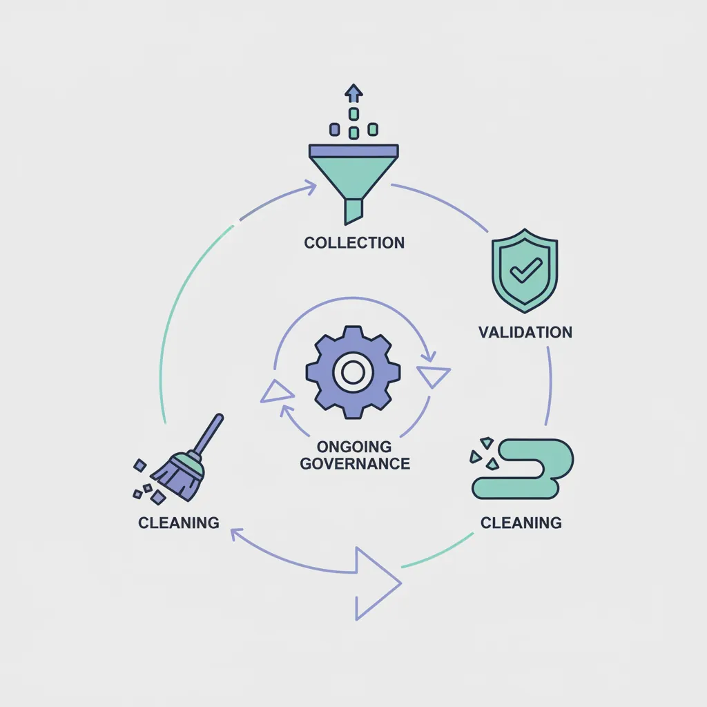
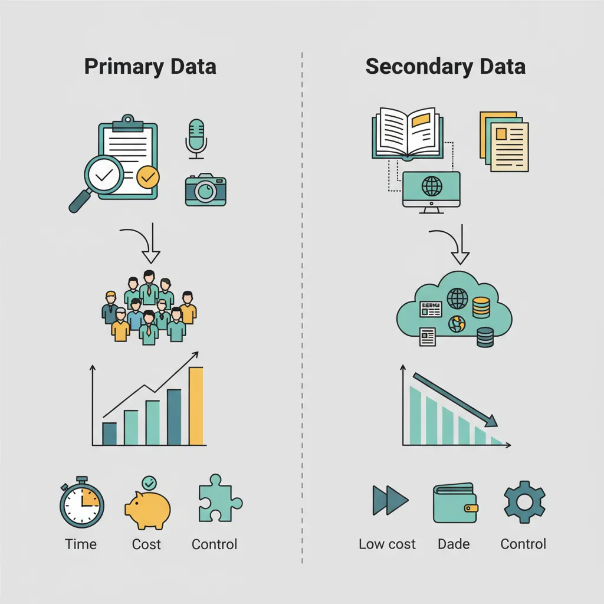
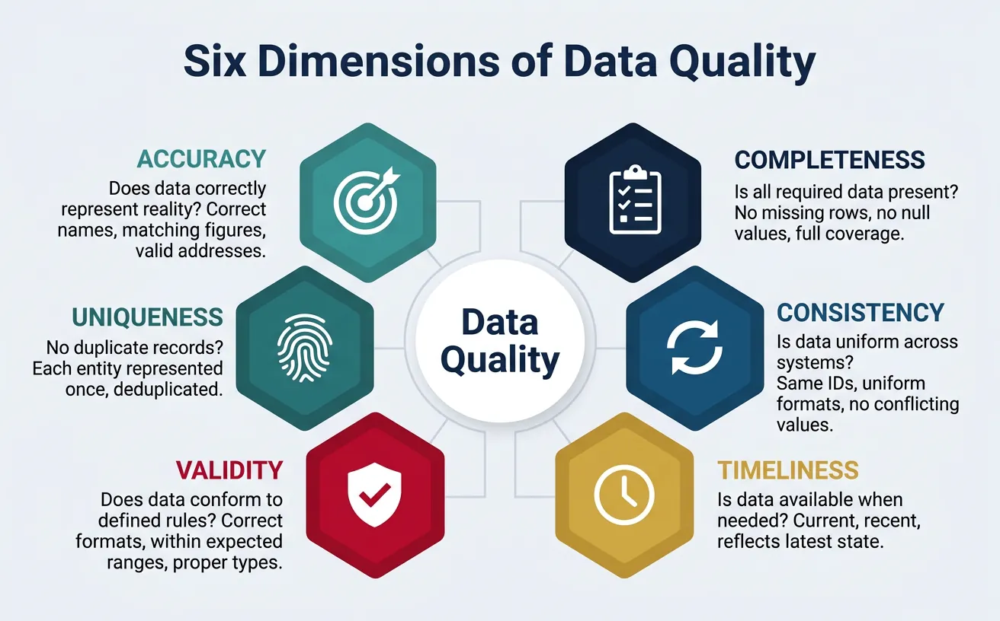
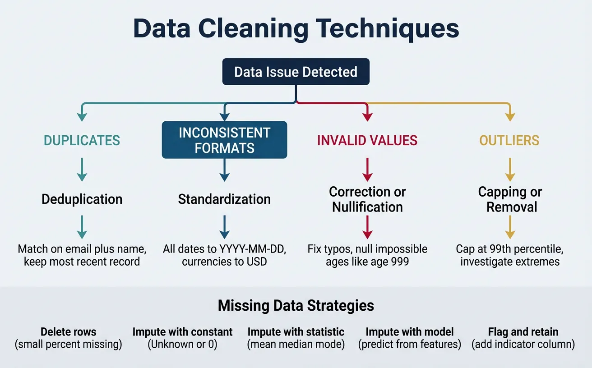

1. Introduction
Your analytics are only as good as your data. Before dashboards, models, and insights come the foundational work of collecting, validating, and maintaining data quality. This guide covers the entire data quality lifecycle.

Data-Driven Decisions
Introduction to Business Analytics & DDDM
Analytics maturity, data-driven culture, business valueDefining & Tracking KPIs
OKRs, leading/lagging indicators, scorecard designDashboard Design & BI Tools
Tableau, Power BI, dashboard best practices, data vizExperimentation & A/B Testing
Hypothesis testing, control groups, sample sizingStatistical Significance & Interpretation
P-values, confidence intervals, effect size, power analysisDecision Frameworks & Structured Decision Making
Decision matrices, Bayesian thinking, risk analysisData Collection & Quality Management
Surveys, ETL, data governance, cleaning pipelinesBusiness Storytelling & Visualization
Narrative structure, chart selection, audience designPredictive Analytics & Forecasting
Regression, time series, ML models, forecasting methodsData-Driven Culture & Organizational Adoption
Change management, data literacy, organizational buy-inFunction-Specific Data Applications
Marketing, finance, operations, HR analyticsCapstone Projects (Portfolio-Ready)
End-to-end analytics projects, portfolio buildingAdvanced Analytics & Automation
ML pipelines, AutoML, real-time analytics, AI integrationWhy Data Quality Matters
Poor data quality has real business costs:
The Cost of Bad Data
- IBM estimates that bad data costs the US economy $3.1 trillion annually
- Gartner research shows poor data quality costs organizations an average of $12.9 million per year
- Data scientists spend 60-80% of their time cleaning and preparing data
GIGO Principle
Garbage In, Garbage Out (GIGO) — The most sophisticated analytics cannot compensate for flawed input data. If you feed bad data into a model, you'll get bad decisions out.
| Data Quality Issue | Business Impact |
|---|---|
| Duplicate customer records | Inflated customer counts; wasted marketing spend |
| Missing values in revenue data | Understated financial performance; wrong forecasts |
| Inconsistent date formats | Broken joins; incomplete time series; reporting errors |
| Stale inventory data | Stockouts or overstocking; customer dissatisfaction |
2. Data Collection Methods
Data can be collected through various methods, each with trade-offs in cost, quality, and timeliness.

Primary Data Collection
Primary data is collected directly for your specific purpose:
| Method | Best For | Limitations |
|---|---|---|
| Surveys | Customer feedback, NPS, market research | Response bias; low response rates |
| Interviews | Deep qualitative insights; understanding "why" | Time-intensive; small sample size |
| Observations | Process studies; usability testing | Observer effect; limited scale |
| Experiments | Testing hypotheses; A/B tests | Requires volume; ethical constraints |
Secondary Data Sources
Secondary data is collected by others but useful for your analysis:
- Internal systems: CRM, ERP, HRIS, financial systems
- Third-party data: Market research firms, data vendors, government statistics
- Public data: Census data, SEC filings, open data portals
- Web scraping: Competitor pricing, reviews, job postings
Automated Collection
Modern businesses rely heavily on automated data collection:
Automated Data Collection Stack
EVENT TRACKING API INTEGRATIONS ├─ Web analytics (GA4, Mixpanel) ├─ CRM → Warehouse (Salesforce API) ├─ Product events (Segment) ├─ Marketing → Warehouse (FB, Google Ads) ├─ Server logs ├─ Payment → Warehouse (Stripe webhooks) └─ Mobile app events └─ Support → Warehouse (Zendesk API) IOT & SENSORS DATABASE REPLICATION ├─ Manufacturing sensors ├─ CDC (Change Data Capture) ├─ Point-of-sale systems ├─ Database snapshots ├─ Fleet tracking GPS └─ Log-based replication └─ Smart devices
3. Data Quality Dimensions
Data quality is multi-dimensional. High-quality data must meet standards across several criteria:

Accuracy
Does the data correctly represent reality?
- Customer name spelled correctly
- Revenue figures match financial records
- Addresses are valid and deliverable
Completeness
Is all required data present?
- All records captured (no missing rows)
- All fields populated (no null values where data should exist)
- Coverage across all time periods and segments
Consistency
Is data uniform across systems?
- Same customer ID in CRM, billing, and support systems
- Date formats consistent (all YYYY-MM-DD vs mixed formats)
- No conflicting values (customer marked "active" in one system, "churned" in another)
Timeliness
Is data available when needed?
- Real-time for operational dashboards
- Daily refresh for tactical decisions
- Monthly/quarterly for strategic planning
The 6 Dimensions of Data Quality (DAMA)
Industry framework adds two more dimensions:
- Validity: Does data conform to defined formats and rules?
- Uniqueness: Is each record represented only once?
Rate your dataset across 6 quality dimensions: Accuracy, Completeness, Consistency, Timeliness, Uniqueness, and Validity. Download as Word, Excel, or PDF.
All data stays in your browser. Nothing is sent to or stored on any server.
4. Validation Techniques
Validation catches data quality issues before they propagate through your analytics.
Data Profiling
Data profiling examines the structure and content of data:
- Column statistics: Min, max, mean, median, standard deviation
- Cardinality: Number of unique values
- Null rates: Percentage of missing values
- Pattern analysis: Common formats, outliers
Validation Rules
Define explicit rules that data must satisfy:
| Rule Type | Example |
|---|---|
| Format | Email must contain @ symbol |
| Range | Age must be between 0 and 150 |
| Referential | Every order must have a valid customer_id |
| Business Logic | Ship date cannot be before order date |
| Uniqueness | Email must be unique across customers |
Anomaly Detection
Statistical methods to identify unusual data points:
- Z-score: Flag values more than 3 standard deviations from mean
- IQR method: Flag values outside 1.5× interquartile range
- Time series: Alert when metrics exceed expected bounds
5. Data Cleaning
Once issues are identified, they need to be resolved systematically.

Cleaning Techniques
| Issue | Technique | Example |
|---|---|---|
| Duplicates | Deduplication | Match on email + name; keep most recent |
| Inconsistent formats | Standardization | All dates to YYYY-MM-DD; all currencies to USD |
| Invalid values | Correction or nullification | Fix typos; null impossible ages |
| Outliers | Capping or removal | Cap at 99th percentile; investigate extreme values |
Handling Missing Data
Different strategies for missing values depending on context:
Missing Data Strategies
- Delete: Remove rows with missing values (only if missing at random and small %)
- Impute with constant: Replace with "Unknown", 0, or business-meaningful default
- Impute with statistic: Replace with mean, median, or mode
- Impute with model: Predict missing values using other features
- Flag and retain: Keep null but add indicator column for analysis
6. Data Governance
Data governance ensures data is managed as a strategic asset across the organization.
Governance Framework
Key components of a data governance program:
- Policies: Rules for data access, retention, privacy, and quality
- Standards: Naming conventions, data definitions, formats
- Processes: How data is captured, transformed, and shared
- Organization: Roles, responsibilities, and accountability
- Technology: Tools for cataloging, lineage, and quality monitoring
Data Stewardship
Data stewards are accountable for data quality in their domains:
| Role | Responsibility |
|---|---|
| Data Owner | Business accountability for data; defines access policies |
| Data Steward | Day-to-day quality management; defines business rules |
| Data Custodian | Technical implementation; security and infrastructure |
7. Conclusion & Next Steps
Key Takeaways
- Quality precedes analytics—GIGO applies to all data work
- Six dimensions: accuracy, completeness, consistency, timeliness, validity, uniqueness
- Validate early and often—profiling, rules, and anomaly detection
- Clean systematically—deduplication, standardization, imputation
- Govern proactively—policies, stewardship, and accountability
In the next article, we'll cover Business Storytelling & Visualization—how to transform your clean, quality data into compelling narratives that drive action.